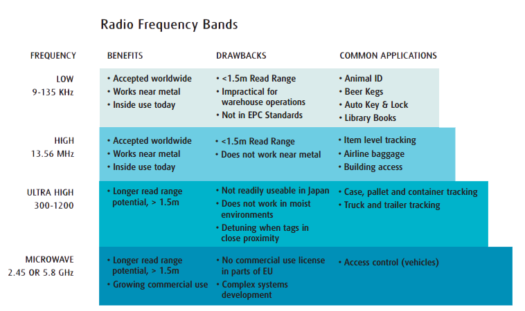

Industry
Sensor Technology
MEMS (microelectrical mechanical systems) comprise a wide range of new mechanical technologies being developed today and which will play a key role in the IoT.
Metcalf's Law
What is Metcalf's Law? It will certainly help explain the importance of connecting as many 'things' to the Internet of Things. Click the image to find out more.
RFID
How do we establish uniqueness on the Internet of Things? The one current solution that is commonly used in industry is Radio Frequency ID tags which have been standardized and widely adopted across many industries, providing unexpected benefits.
Walmart and the IoT
To keep supplying its customers with the lowest prices, Sprawlmart Walmart has been leading the way in an IoT-style inventory management scheme.
IPv4 versus IPv6
It was in the primordial era of ARPAnet which the internet and the IPv4 standard was conceived. Unfortunately, the designers of ARPAnet were researchers who could not predict the massive scaling that the internet would undergo to meet the demands of our modern internetcentric world.
Smart Grids
Energy efficiency is a growing concern as reducing our power use becomes a greater priority, one way to tackle this is to alter the way we distribute energy, letting end users and providers exchange information and adopt their performance accordingly.
MEMS comprises a wide range of microsensors which are built into an electric circuit, giving it both physical world detection capabilities as well as the ability to preprocess this data before sending it off to the computer system at large. Further, MEMS can also be mechanical devices which can manipulate the world. This can be anything from small gearing systems to channels which disrupt electric frequency output [1]. Every time you get into a car, there are hundreds of MEMS sensors protecting you. They control airbag deployment, sense tire pressure, fuel pressure, car occupancy, and occupant weight. You are probably also familiar with the MEMS sensors inside of your phone which allow it to sense vibration and orientation. MEMS devices are becoming more sophisticated. In biological applications, scientists can grow individual cells in massive arrays of microscopic pools which are irrigated by MEMS devices. It sounds like science fiction, but these technologies will progress and become integrated into all sorts of internet enabled devices.
The increased use of MEMS in consumer electronics has driven the price down. This trend will likely continue and people will find novel uses for MEMS with or without the aid of the IoT.

References:
[1] MEMS Overview - MEMS
Metcalf’s law states that the usefulness of a network is directly related to the number of connected users. Originally used to describe any compatible communicating devices such as telephones and fax machines, the law now refers to the number of internet users. Since the internet is accessible on many more devices and accessible from many more networks than it was ten years ago, Metcalf’s law has never been more timely. [1]
Metcalf’s law is highly related to the business concept of network effects. Some businesses benefit from a service only when several other businesses join in. This is true for say, a rental car fleet tracker. If many companies agree to start sharing their vehicles based on a built in vehicle tracking system, the system only becomes useful when a large portion of all the company’s fleets are tracked. In internet terms, a social network like Facebook becomes much more fun when all your friends are using it versus if you and Mark Zuckerberg were the only two users.
The obvious extension to the IoT is that Metcalf’s law is sometimes very hard to overcome. For instance with networked automobiles, it requires that a good amount of consumers buy cars with networking and M2M (machine to machine) communication protocols built in before the services that this extra hardware provides can overcome the cost associated with buying this extra hardware. On the bright side, since computing and sensing technology is becoming ever cheaper and addressing capabilities with IPv6 are becoming massively more capable, the amount of things connected to the IoT is set to explode. Once this happens and M2M communications are standardized, Metcalf’s law states that the IoT will become as value as the amount of things we hook up to it.
References:
[1] Law - Princeton
If everything is to connect to the internet, then the internet will need to distinguish between one thing from another thing. Seems obvious right? We’re all familiar with the concept of IP addresses to uniquely distinguish me at my tablet from you at your laptop, but this is actually a fairly rare case of interaction. On the internet of things, the majority of interactions will be machine to machine. Further, most of these machines may actually be passive entities. Think of all the things which only need to passively exist in the physical world and cyber world; things like a package containing your order from Amazon. Its uniqueness is important because you wouldn’t want to check the tracking info for the package and be told that it’s in Mumbai simply because there are two packages in the world with the same digital identity. And unless you are a control freak, it would be overkill if your package had a built in GPS unit and could tell you exactly where it was when you looked it up on your smartphone. This realm of identification, having a unique digital address or type identifier, is currently being taken up by RFID, a technology which is key to the future of the IoT.
RFID, “Radio Frequency Identification”, has been around for a while. In fact, it has its origins in technology developed during World War II. RFID tags are small chips that can broadcast information at a set radio frequency. They can be powered, continuously broadcasting their identification message, or unpowered, requiring a powered device to first charge the tag using a strong electric field [1]. RFID has the advantage over barcodes in that they can be scanned without a clear line of site and they can contain real time data [1]. Various protocols exist for RFID and different countries have different radio frequency bands allocated for use by devices like RFID, which makes the standardization challenging. Recently, the push to standardize and mass produce RFID has fallen on the shoulders of one man, Kevin Ashton. A british technology seer, Ashton claims to be the first human to utter the term, “Internet of Things” [2]. Claims aside, his work has been to create a global standard of RFID in conjunction with researchers at MIT. In his words, the role RFID plays in the IoT is, “...to enable computers to observe, identify and understand the world—without the limitations of human-entered data.” [2] Ashton helped standard the Electronic Product Code, one of the most important protocols for identifying products being transported along a supply chain of say, Tesco or Walmart.
Currently, several major corporations use RFID in supply chain management, animal tracking, personnel and vehicle tracking, and fun things like checking into and tagging photos from social events. Since mass production of the cheapest, passive RFID tags has driven the price down to less than 5 cents a tag, RFID will continue to find its way into new domains. To learn about an example of how Walmart uses RFID to increase its efficiency, check out our Walmart IoT blurb.
At the current time, it RFID is context specific. That is, you may be able to read an RFID and get all the bits it has to transmit, but if you feed that data to a social media app when the ID is for a FedEx package tracking system, it will probably do you no good because your social media app knows nothing about the how to interpret those bits. As standardization of RFID continues and the IoT becomes larger, we may see a universal protocol for RFID like we have for addressing of computers over the internet.
References:
[1] Future Information Sharing - FIDIS
[2] The "Internet of Things" Thing - RFID Journal
As a major retailer, Walmart not only sells products directly to consumers, but it seeks out suppliers for these products. This process of the movement of goods from manufacturer to consumer is complex and distributed, a perfect candidate for internet of everythingification.

Currently, Walmart's supply chain goes something like this. Walmart finds the cheapest supplier and contracts them. This contract establishes that the supplier mark each product or shipment of products with an RFID tag which uses the Electronic Product Code standard established by Kevin Ashton and his researchers. These tags help Walmart track shipment creation and item tracking, two key pieces of information which Walmart uses when forecasting future shipments and demands. The tags also allow manufacturers and warehouses along the Walmart supply chain to alert Walmart as goods move in and out of storage on pallets. All this information is stored by Walmart to create an accurate picture of the how long products sit in storage before moving to shelves [1]. Reducing this waiting period is essential for price reducing and it seems to work. In 2007, Walmart announced that their RFID-based tracking system helped reduce excess inventory while reducing the occurrences of out-of-stockages by one third. This program was originally meant for warehouse orders which are large shipments of items but is now being expanded to track individual garments and items. This is in part due to the reduced price of RFID tags and in part due to the success of RFID tracking. In fact it's not just Walmart that has benefitted from the autonomous tracking of goods. Marks and Spencers in the UK cites that its RFID supply tracking has helped reduce theft and manage high volume orders. The Department of Defense started using RFID to track assets like machinery, jeeps, tanks, and weaponry to increase shipping efficiency to which it claims a 90% reduction in use of shipping containers. [2]
Simply creating a way for computers to identify real world objects is showing its potential benefits. As we can see, allowing retailers to have an abundance of information about their physical assets has increased efficiency and thus, reduced prices for the consumer: us. This sort of real-world information gathering is a key aspect of the internet of things. In the future we would expect that coordination would happen not just behind the scenes in company warehouses, but between our cars, our clothes, and maybe even our food.
References:
[1] RFID Technology Boosts Walmart’s Supply Chain Management - University of San Fransisco
[2] Demystifying RFID in the Supply Chain - UPS
It was in the primordial era of ARPAnet which the internet was conceived. Unfortunately, the designers of ARPAnet were researchers who could not predict the massive scaling that the internet would undergo to meet the demands of our modern internetcentric world. One fatal flaw in the design was the choice to use 32 bit addresses to locate a machine on the network under the IPv4 standard. This translates to some 4 billion address- subtracting about a billion for reserved addresses. The 32 bit address keeps packet header size small, but it drastically limits the amount of addressable devices. If we consider that there are roughly 7 billion people on the planet and that some of these people own two iPhones, a laptop, a desktop, an internet fridge, and Google Glass, we can see that there aren't enough IPv4 addresses to go around. Currently we use clever tricks like network address translation, NAT, to expand the number of available addresses. Essentially, we have made it so each public facing address is mapped to multiple private addresses on a local network. However, NAT increases the overhead on routing operations as routers have to keep a table to map internet-facing addresses to private addresses and must manipulate outgoing and incoming packets to correctly forward them. [1]
Like most things that came out of the 70s, IPv4 is clunky and obtuse compared to today's standards. Further the designers of the internet would probably only have conceived of the IoT via (a suitably entertaining) science fiction stories in stoner magazines (Cha man, I can totally like talk to my glasses to cook me up a burrito by looking a a code on the side of a bus stop.). To make ordering burritos via your Google Glass a reality, and to remove clunky NAT procedures, we need more addresses. IPv6 is the answer.
IPv6's main selling point it that it uses 128 bits for its address. A wonderful description of how much address space this is come from Strauss, “we could assign an IPV6 address to every atom on the surface of the earth, and still have enough addresses left to do another 100+ earths.” In other words, IPv6 eliminates the need for NAT and allows pretty much any device to be connected to the internet and have its own unique address [3]. Since the IoT aims to address an absurd amount of objects this is a necessary advance in technology that must take place before the IoT becomes reality. This change has been slow to make. Currently most ISPs are IPv4 only, however some have started to offer “dual stack” networks which means that they configure connected devices with both IPv4 and IPv6 addresses. This allows flexibility as the transition to IPv6 occurs. In the future, pure IPv6 networks will be commonplace but legacy IPv4 networks will still exist. In this case a dedicated piece of hardware that performs a translation between addresses. This is similar to NAT that occurs currently, but the difference is that it encompasses a larger network structure.

As mentioned previously, this transition is slow and costly. Network hardware and software must be upgraded to comply with the new addressing scheme. Businesses in the US alone are predicted to spend upwards of $25 Billion over the next 25 years as they make the transition [2]. This transition will be especially slow because the benefits businesses receive from making the IPv6 may not outweigh the benefits of keeping legacy systems in place. The most important industry making the IPv6 push is the mobile industry. Each mobile device connected to the mobile network requires a unique address if it is to connect to the internet. Given the over-abundance of smart phones, carriers have had to respond with addressing techniques similar to NAT64- “Carrier Grade NAT”. Since these workarounds are inefficient at best, wireless standards committees such as LTE are requiring carriers to deploy IPv6.

References:
[1] Mobile is Driving IPv6 Adoption - Network World
[2] IPv6 Costs - Network World
[3] IPv6 and Windows - Microsoft
In addition to using the internet of things to reduce power requirements, by increasing energy efficiency, in consumer, public and industrial settings, the internet of things is also used to introduce smart energy strategies. This means developing ‘new grid infrastructures’ and providing ‘smart metering capabilities[1]. The traditional grid is the infrastructure providing electricity from the generators to the end source. This grid is a one way system with power travelling out to users and businesses.
With a smart grid information travels both ways, users feed information back to the grid about their usage, in return the grid can send data back to devices allowing users devices to adjust power usage according to available supply when necessary. Watch the animation above for more information on how a smart grid actually works.
Smart grid technology is currently being deployed across the uk, with the government policy aiming to have smart meter in every home by 2020. For more information see the uk government's guide to smart meters."We aim for all homes and small businesses to have smart meters by 2020."
Department of Energy and Climate Change 2013

Further Resources:
A more detailed description of smart grid technology.
Academic paper describing the steps to take towards a smart grid.
Find current news about the smart grid here.
References:
[1] - Utilities/Smart Grid - Cisco